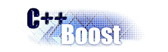

 |
Boost.Smart PointerOverview |
This library offers an highly configurable policy-based smart pointer as originally described in Modern C++ Design [Alexandrescu 01] and implemented in Loki. As such, MC++D should be consulted for all major design rationales. While this implementation varies from the original Loki version, it is essentially the original Loki implementation converted to Boost coding conventions and enhanced by suggestions from the Boost community and Andrei himself.
Since MC++D provides the best overview for this library, this documentation will primarily discuss changes from the original Loki design. In particular, the following are the most notable:
optimally_inherit<>.array_storage policy.Obviously, one of the central features of policy-based design is the policies
themselves. Boost.Smart Pointer provides a full complement of policies to cover a
wide array of smart pointer use cases. However, there will inevitably be scenarios not
covered by the provided policies, and at this point, the user will need to know how to
construct custom policies. Understanding the design of smart_ptr is the
first step, and can be accomplished by reading MC++D. Then, the
Rationale and Definitions
pages discuss details regarding the implementation of policies.
Revised 30 September, 2002
© Copyright David B. Held 2002. All Rights Reserved.